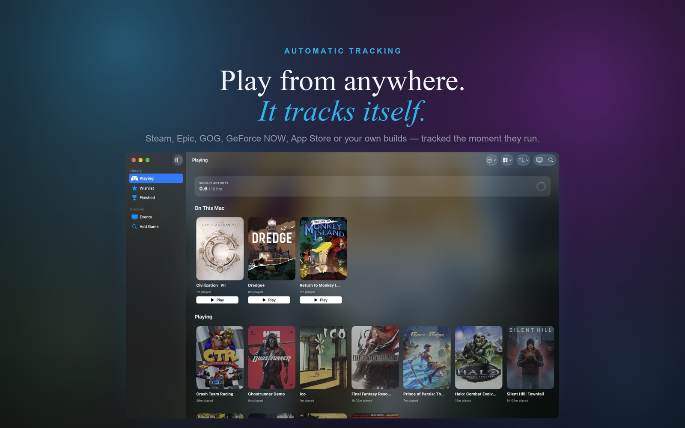
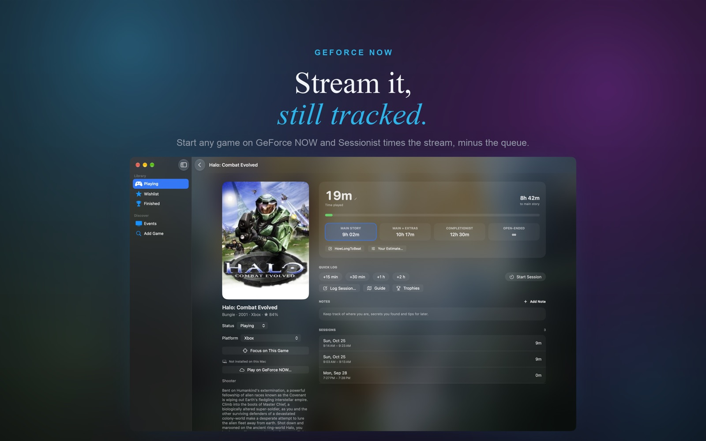
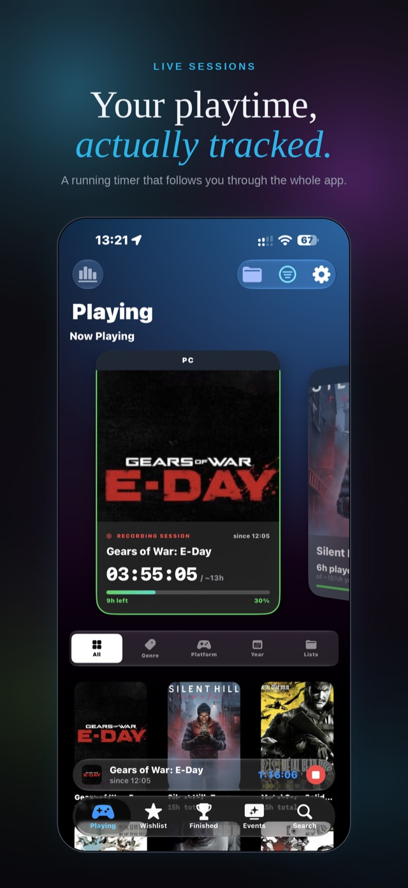
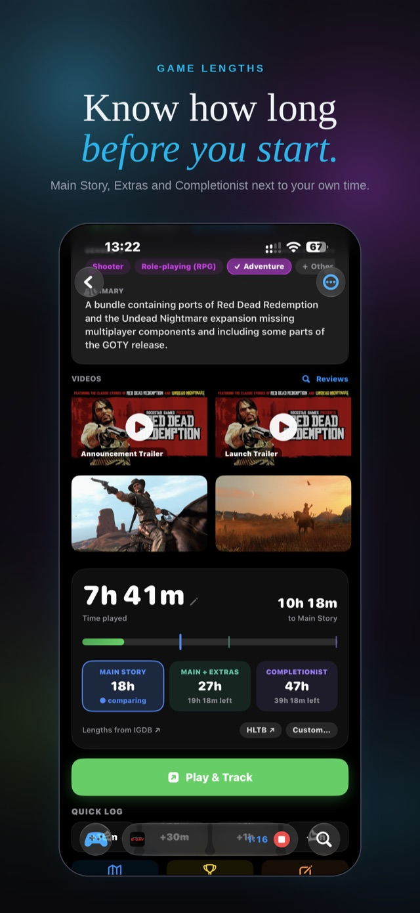
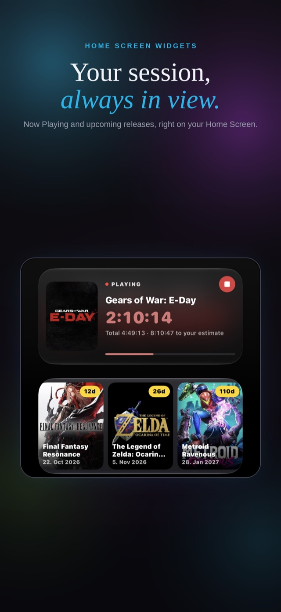
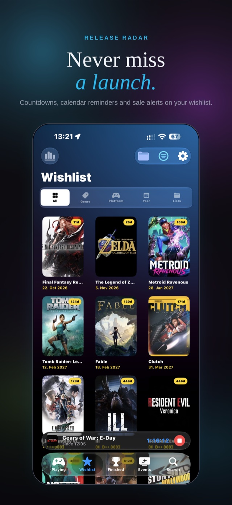

Sessionist: Game Tracker
Track how long you play — on iPhone, iPad and Mac.
macOS 14+ · Universal · Notarized · Includes Recomp Hub & iCloud Sync
Sessionist keeps your game library and measures your playtime: start a session with a tap, from a widget or Shortcuts, or let the Mac app track every game automatically. See how long a game takes, focus on one at a time and keep your wishlist and gaming events in one place.
- Session timer with Live Activity, widgets and Shortcuts
- Automatic tracking on the Mac: Steam, Epic, GOG, GeForce NOW, App Store and your own builds
- Recomp Hub on Mac (Direct Edition): browse, install, build and track native macOS & iOS recompilations and decompilation ports
- Main Story, Main + Extras, Completionist and anonymous community lengths next to your own time
- Focus, Up Next, On Hold, ratings, notes and smart filters
- Wishlist with release countdowns and sale alerts; gaming events
- Couch Mode on the Mac for your controller and TV, plus Discord Rich Presence
- Syncs through your own iCloud account — no account, no ads, no tracking
iCloud Sync between Mac and iPhone
The Mac version and the iOS app share one library: games, sessions, collections, wishlist, notes and the running timer. There is no account and nothing to sign in to — Sessionist uses the Apple ID you’re already signed in with.
- Use the same Apple ID on your Mac and iPhone, with iCloud turned on.
- Open Sessionist on both. The first sync can take a minute or two.
Not syncing? On iPhone check Settings → [your name] → iCloud → Apps Using iCloud; on Mac System Settings → [your name] → iCloud → Saved to iCloud → See All. The Mac app’s Settings → Sync Status shows the last sync and has a Repair button.
Screenshots






Questions? See Support or write to noubyte@absan.de.